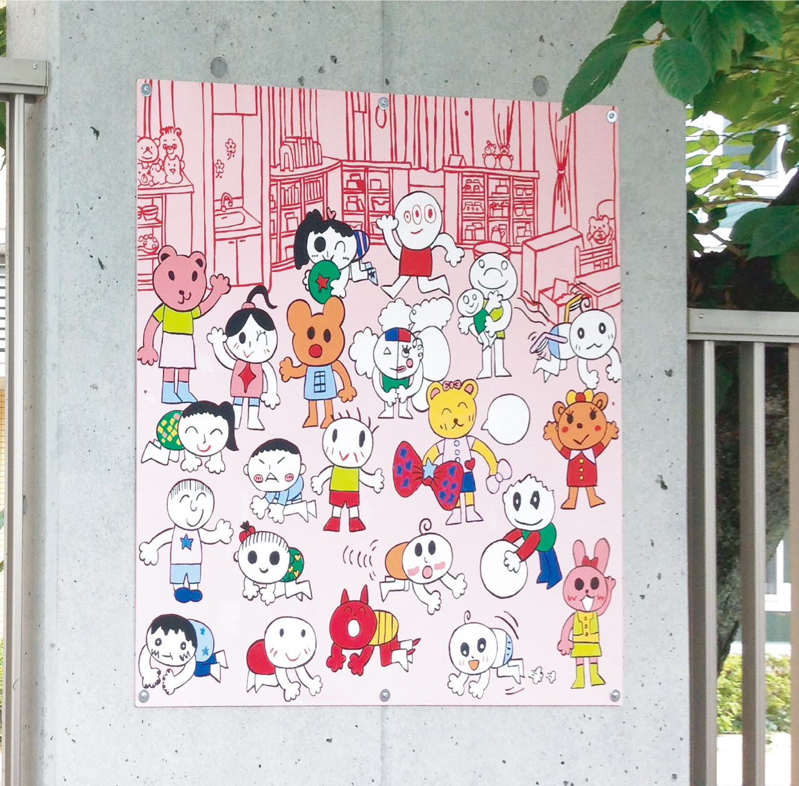
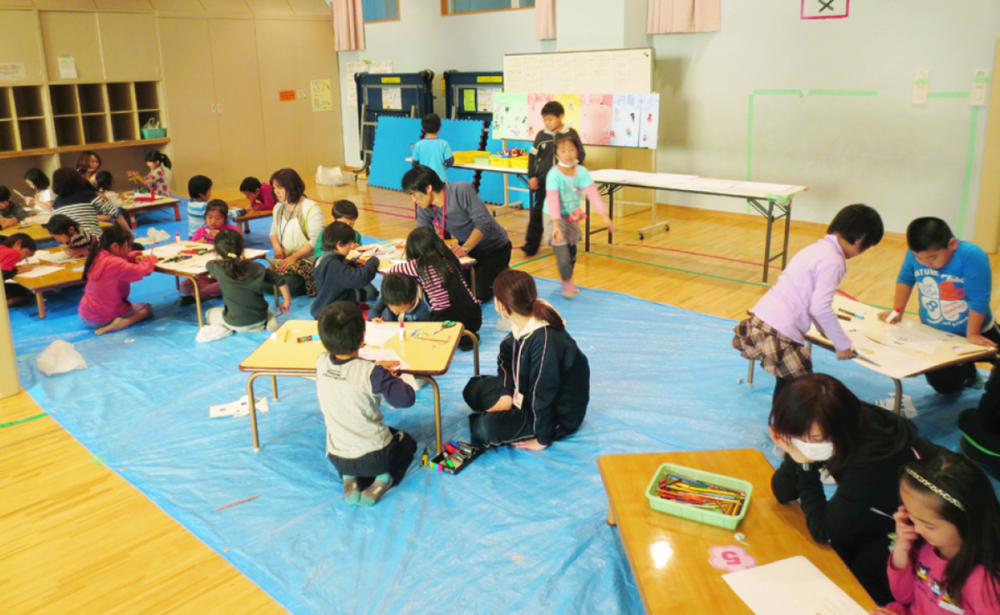
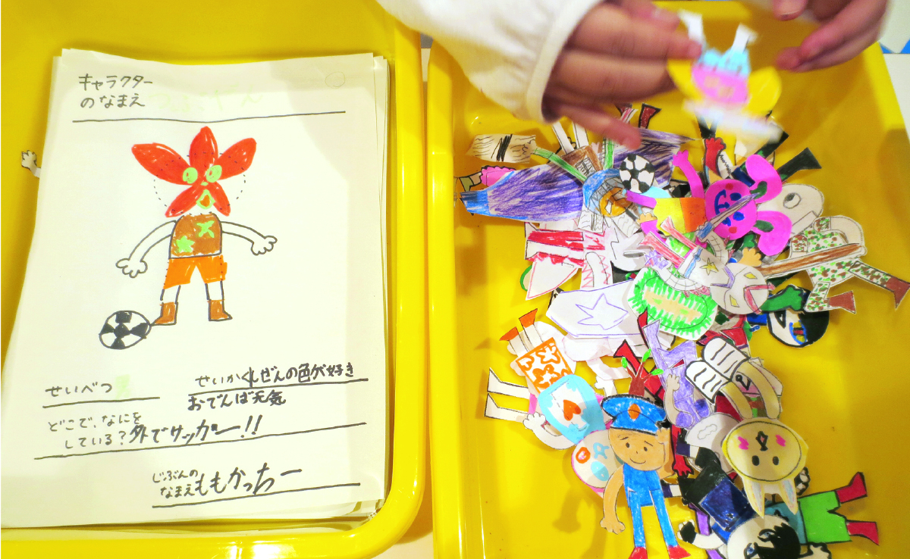
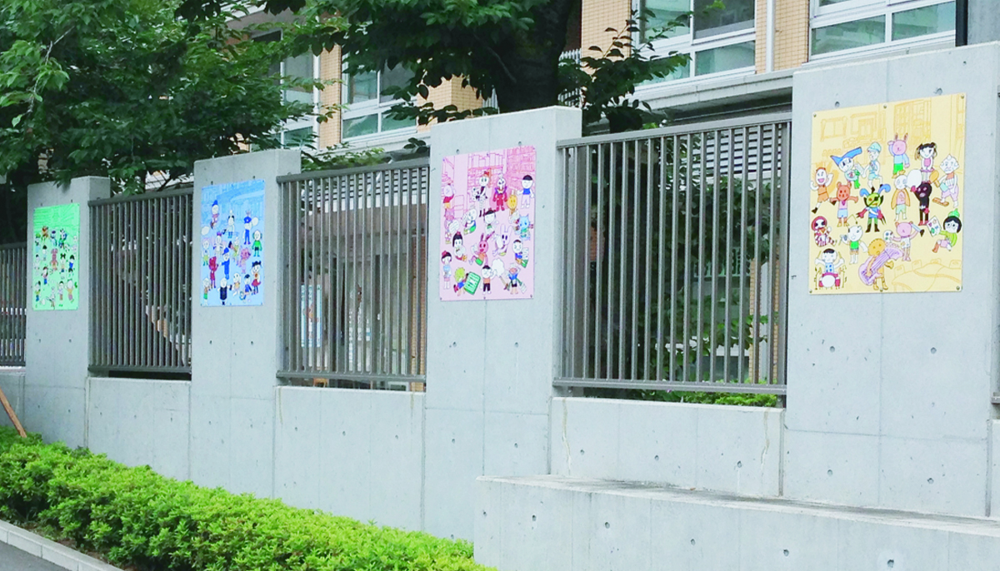
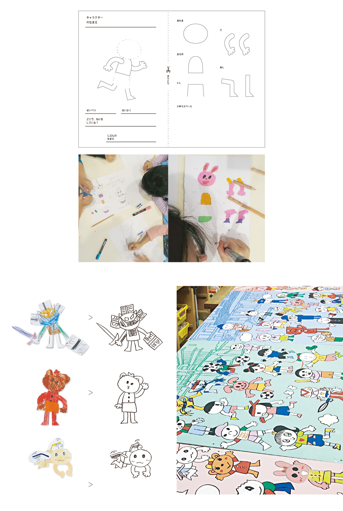

新宿ここ・から広場 壁画制作ワークショップ
新宿区立子ども総合センター
ワークショップ
2014. 09





ワークショップ
2014. 09
学童施設や児童館、家庭支援センターなどを併設する、新宿区立子ども総合センター。その外壁にかける壁画をワークショップ形式で制作。
利用者の子どもたちに、施設内の様々な場所にいるキャラクターを制作してもらうワークショップを行いました。やってくる子どもたちは絵を描くのが好きな子ばかりでは無いため、簡単にキャラクターを設定＆描画できるワークシートを用意。つくってもらったキャラクターたちをトレースして配置し、全部で５枚の壁画としました。
＜ BACK
© Moeri Ito